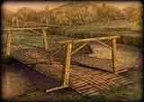
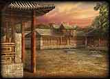

| 概要 | 情報 | アイテム一覧 |
| 武将一覧 | 簡易チャート | ステージ攻略 |
| 点心・千吉仙酒 |
| 地域 | シナリオ名 |
| 夷陵 | 夷陵の戦い |
荊州攻略戦 |
|
| 五丈原 | 街亭の戦い |
五丈原の戦い |
|
| 合肥 | 合肥の戦い |
石亭の戦い |
|
孫堅討伐戦 |
|
| 漢中 | 定軍山の戦い |
黄巾懺滅戦 |
|
| 官渡 | 官渡の戦い |
曹操討伐戦 |
|
黄巾砦攻防戦 |
|
| キ州 | 黄巾の乱 |
| 許昌 | 許昌の戦い |
シ水関の戦い |
|
| 呉群 | 建業の戦い |
江東平定戦 |
|
呉群攻略戦 |
|
| 洛陽 | 虎牢関の戦い |
| 徐州 | 下ヒの戦い |
黄巾賊撃退戦 |
|
劉備討伐戦  |
|
| 成都 | 成都制圧戦 |
成都の戦い |
|
ラク城の戦い  |
|
| 赤壁 | 夏口の戦い |
赤壁の戦い |
|
| ジョウ陽 | ハン城争奪戦 |
ハン城の戦い |
|
劉表奇襲戦  |
|
| 汝南 | 博望坡の戦い |
| 南陽 | 宛城の戦い  |
呂布の乱 |
|
| 南中 | 南蛮夷平定戦 |
南蛮防衛戦 |
|
| 南群 | 長坂の戦い |
南群の戦い |
|
| 地域 | シナリオ名 |
| 概要 | 情報 | アイテム一覧 |
| 武将一覧 | 簡易チャート | ステージ攻略 |
| 点心・千吉仙酒 |
真・三國無双3 ハイパー
| 目次へ戻る | ページの上部へ |
500ページ目